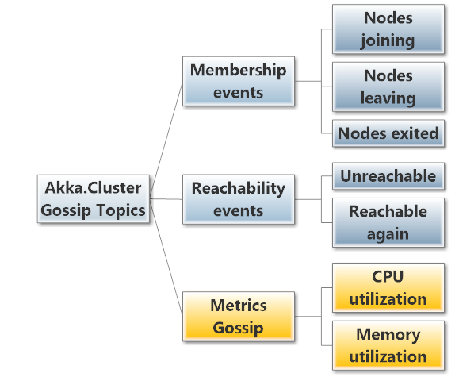
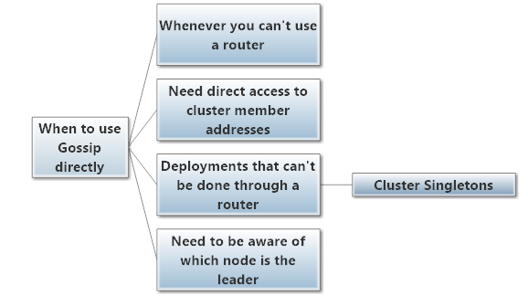

Using the Cluster ActorSystem Extension Object
Akka.Cluster is actually an "ActorSystem extension" that you can use to access membership information and cluster gossip directly.
Getting a Reference to the Cluster
You can get a direct reference to the Cluster extension like so (drawn from the SimpleClusterListener example in the Akka.NET project):
using Akka.Actor;
using Akka.Cluster;
using Akka.Event;
namespace Samples.Cluster.Simple
{
public class SimpleClusterListener : UntypedActor
{
// get direct reference to the Cluster extension
protected Akka.Cluster.Cluster Cluster = Akka.Cluster.Cluster.Get(Context.System);
}
}
Working With Cluster Gossip
We've shown a number of examples and referred to many different types of ClusterEvent messages throughout Akka.NET Clustering thus far. We're going to take a moment to show you all of the different types of messages you can subscribe to from the Cluster actor system extension and how the current state of the cluster can be replayed to new subscribers.
Subscribing and Unsubscribing from Cluster Gossip
We've seen a few code samples that showed actors who subscribed to gossip messages from the Cluster actor system extension, but let's review the Subscribe and Unsubscribe methods and see what they do.
Subscribing to Gossip
This is an example of subscribing to IMemberEvents from the Cluster:
// subscribe to all future IMemberEvents and get current state as snapshot
Cluster.Subscribe(Self, new[] { typeof(ClusterEvent.IMemberEvent) });
Unsubscribing from Gossip
Let's suppose you need to unsubscribe from cluster gossip - here's how you can accomplish that.
Cluster.Unsubscribe(Self); // unsub from ALL events
Cluster.Unsubscribe(Self, typeof(IMemberEvent)); // unsub from just IMemberEvent
These two Unsubscribe calls are virtually identical - the difference is that the first call unsubscribes Self from ALL cluster events going forward. The second call only unsubscribes self from cluster messages of type IMemberEvent.
Subscribing and unsubscribing from cluster events are pretty straightforward - now let's take a closer look at the different classes of messages and events we can subscribe to.
Cluster Gossip Event Types
Gossip events fall into three categories:
- Member events
- Reachability events
- Metrics events (not yet implemented)
Cluster Event Categories
Member events
Member events refer to nodes joining / leaving / being removed from the cluster. These events are used by Akka.Cluster routers to automatically adjust their routee lists.
Reachability events
Reachability events refer to connectivity between nodes.
If node A can no longer reach node B, then B is considered to be "unreachable" to node A. If B becomes unreachable to a large number of nodes, the leader is going to mark the node as "down" and remove it from the cluster.
However, if B is able to communicate with A again then A will begin gossiping that B is once again "reachable."
Metrics events (not yet implemented)
These messages are part of a yet-to-be-released library called Akka.Cluster.Metrics. These events are used to report the CPU and memory utilization of specific nodes within the cluster. This information is then used to power a specific set of routers called weighted routers, who can route messages to nodes based on which ones have the most available memory or CPU capacity.
Gossip Message Classes
There's a variety of different types of information we can collect from Akka.Cluster via the Cluster. These gossip classes fall into the categories described above.

ClusterEvent.IMemberEvent- you can subscribe to messages that implement this interface in order to get data about changes in cluster membership.ClusterEvent.IReachabilityEvent- subscribe to messages that implement this interface in order to receive events about nodes being unreachable or reachable.ClusterEvent.IClusterDomainEvent- subscribes you to ALL cluster messages.ClusterEvent.LeaderChanged- subscribe to notifications about changes in the cluster leader.ClusterEvent.RoleLeaderChanged- subscribe to notifications about changes in the role leader.ClusterShuttingDown- receive shutdown notifications for the entire cluster (these events rarely happen.)
As shown above, you can subscribe to these events to get pieces of information you need in order to begin working with the cluster, such as knowing when 2 members of a particular role are up or knowing when the leader becomes unreachable.
Let's expand the SimpleClusterListener example from earlier to shows it subscribing to and handling ClusterEvent messages.
public class SimpleClusterListener : UntypedActor
{
protected ILoggingAdapter Log = Context.GetLogger();
protected Akka.Cluster.Cluster Cluster = Akka.Cluster.Cluster.Get(Context.System);
/// <summary>
/// Need to subscribe to cluster changes
/// </summary>
protected override void PreStart()
{
// subscribe to IMemberEvent and UnreachableMember events
Cluster.Subscribe(Self, ClusterEvent.InitialStateAsEvents,
new []{ typeof(ClusterEvent.IMemberEvent), typeof(ClusterEvent.UnreachableMember) });
}
/// <summary>
/// Re-subscribe on restart
/// </summary>
protected override void PostStop()
{
Cluster.Unsubscribe(Self);
}
protected override void OnReceive(object message)
{
var up = message as ClusterEvent.MemberUp;
if (up != null)
{
var mem = up;
Log.Info("Member is Up: {0}", mem.Member);
} else if(message is ClusterEvent.UnreachableMember)
{
var unreachable = (ClusterEvent.UnreachableMember) message;
Log.Info("Member detected as unreachable: {0}", unreachable.Member);
}
else if (message is ClusterEvent.MemberRemoved)
{
var removed = (ClusterEvent.MemberRemoved) message;
Log.Info("Member is Removed: {0}", removed.Member);
}
else if (message is ClusterEvent.IMemberEvent)
{
//IGNORE
}
else
{
Unhandled(message);
}
}
}
Inside the SimpleClusterListener we subscribe to messages of type of ClusterEvent.IMemberEvent and ClusterEvent.UnreachableMember, a class that implements ClusterEvent.IReachabilityEvent.
The Cluster will periodically broadcast these messages as a result in changes in the membership of the cluister and their reachability, and they'll be delivered to the SimpleClusterListener as messages that can be handled inside the OnReceive method.
When to Work with Gossip Directly
So when would you need to work with cluster gossip messages directly rather than use a clustered router?

In reality, you will use clustered routers 99% of the time. Using cluster gossip directly is only necessary in scenarios where a clustered router isn't a good fit, such as some of the examples given in the diagram above.
Getting Cluster State
You can get the current state of the Cluster two times:
- On initial subscription
- On demand
Getting Cluster State on Initial Subscription
If you use this overload of Cluster.Subscribe, you will get the state of the cluster right after subscribing to the event of your choice. Once you receive the initial state, you will not automatically be sent full state events going forward (see on-demand section below).
Here is how to subscribe to Cluster events and also get the initial state of the cluster:
// subscribe to all future IMemberEvents and get current state as snapshot
Cluster.Subscribe(Self, ClusterEvent.SubscriptionInitialStateMode.InitialStateAsSnapshot,
new[] { typeof(ClusterEvent.IMemberEvent) });
// subscribe to all future IMemberEvents and get current state as event stream
Cluster.Subscribe(Self, ClusterEvent.SubscriptionInitialStateMode.InitialStateAsEvents,
new[] { typeof(ClusterEvent.IMemberEvent) });
Both of these methods accomplish the same goal - subscribing Self to all IMemberEvent cluster events going forward, but the difference is in how Self will receive the current state of the cluster.
In the first Subscribe call, Self will receive a ClusterEvent.CurrentClusterState message that describes all of the current members of the cluster, their roles, and their membership status.
In the second Subscribe call, Self will receive a stream of MemberUp, MemberDown, and other events - essentially an event-sourced version of what you receive in the ClusterEvent.CurrentClusterState message payload.
By default, the initial state will be delivered as a snapshot.
Any future membership change events will also produce the events that are broadcast in the initial state (MemberUp, etc) - so those types of events need to be handled either way.
Getting Cluster State On-Demand
In the above example, the current state of the cluster is delivered initially, but is not delivered afterwards.
To receive a snapshot of the state of the cluster on demand, use the SendCurrentClusterState method, like so:
// get the current state of cluster
Cluster.SendCurrentClusterState (Self);